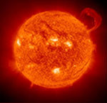

Średnica (km): 1.392.000
Masa (Ziemia = 1): 332.950
Gęstość (g/cm³, Woda = 1): 1,41
Okres obrotu: ok. 27 dni
Przyśpieszenie grawitacyjne (m/²): 273
Szybkość ucieczki (km/s): 620
Słońce jest naszą najbliższą gwiazdą, która jest centrum naszego Układu i wokół której planety krążą po eliptycznych orbitach. Maksymalna temperatura na Słońcu osiąga +6000°C, minimalna +3870°C, a temperatura jądra wynosi aż +15mln°C. Słońce powstało około 4,6 miliarda lat temu z wirującej chmury gazów i pyłów. We wnętrzu Słońca cały czas zachodzą reakcje jądrowe, których głównym składnikiem jest wodór. Słońce składa się z czterech warstw: korony słonecznej (którą można oglądać podczas zaćmienia Słońca), chromosfery (w której zachodzą erupcje), fonosfery (będącą właściwą powierzchnią Słońca) i jądra (w którym powstaje światło i ciepło).
Słońce nie spala się tylko produkuje energię cieplną i świetlną. Kiedy dwa atomy wodoru łączą się ze sobą tworząc hel, powstaje mała część materii, która przesuwa się w kierunku powierzchni Słońca i jest tam uwalniana w postaci światła i ciepła. W ten sposób Słońce traci część swojej masy. Słońce ma czasami ciemne plamy na swej powierzchni zwane plamami słonecznymi. Pojawiają się one zwykle w skupiskach i mogą trwać od kilku godzin do kilku miesięcy. Przy kilkudniowej obserwacji widoczne jest przesuwanie się plam na tarczy słonecznej, a dzieje się tak, ponieważ Słońce obraca się wokół swej osi, co trwa miesiąc.
Słońce nie spala się tylko produkuje energię cieplną i świetlną. Kiedy dwa atomy wodoru łączą się ze sobą tworząc hel, powstaje mała część materii, która przesuwa się w kierunku powierzchni Słońca i jest tam uwalniana w postaci światła i ciepła. W ten sposób Słońce traci część swojej masy. Słońce ma czasami ciemne plamy na swej powierzchni zwane plamami słonecznymi. Pojawiają się one zwykle w skupiskach i mogą trwać od kilku godzin do kilku miesięcy. Przy kilkudniowej obserwacji widoczne jest przesuwanie się plam na tarczy słonecznej, a dzieje się tak, ponieważ Słońce obraca się wokół swej osi, co trwa miesiąc.